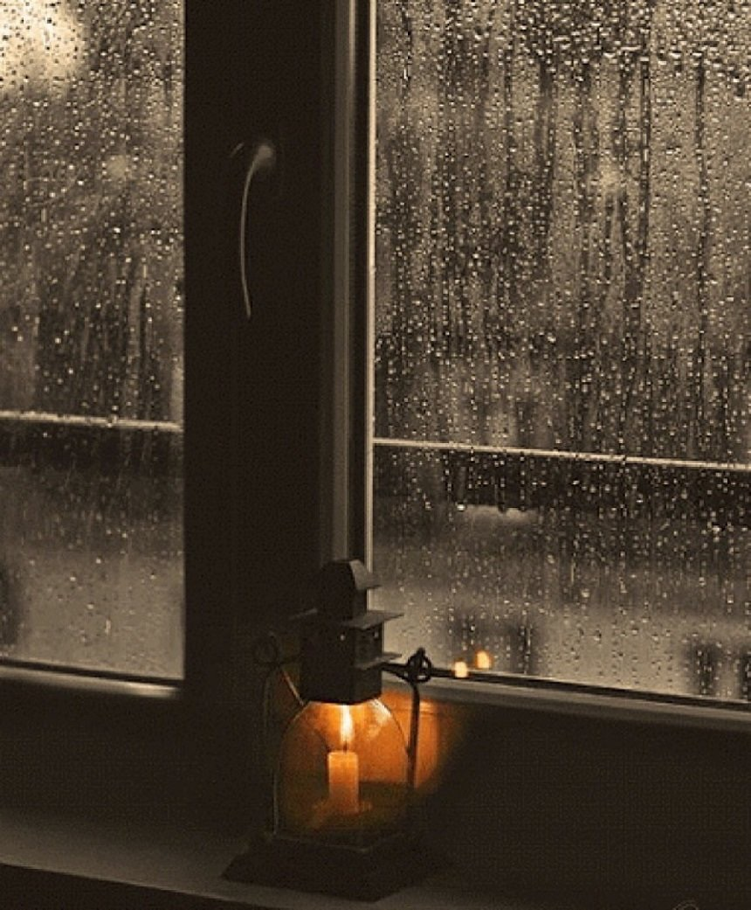

"Я бы хотел стать прозрачной водой, приливать в океан, стать ветром полей. Уносить за собой всё, что грузит наш день, быть холодным как ночь, пробиваться к земле..."
Ох, емае, давно не виделись :)
Много чего произошло, тратил все свое время на одну девочку, о чем я не жалею, это опыт очередной, к сожалению. Хожу в автошколу, скорее всего уже буду водить машинку на этой неделе :)
Звал знакомых гулять в субботу, но, как всегда, все (3 существа) отказались, поэтому я сам поехал в 9 часов вечера на автобусе искать свою судьбу среди множества людей, но так и не нашел никого. Погулял часа 2-2.5, мне очень понравилось, мост светился RGB цветом, медленно переливался цвет из одного в другой, все это отражалось на речку. Когда я увидел это, у меня появилось какое-то чувство теплое внутри, может быть это счастье, я не знаю, я мало такое испытываю :)
Потом ко мне подошли парень с девушкой и попросили вызвать им такси, я такой "huh?", а они сказали, что наличкой, поэтому все ок, вызвал такси им и пожелал удачи, потом проверил и они добрались до места. Вот ходил я искать девушку, да? Но не знаю, мне кажется, что стало хуже, все ходили парами, я смотрел на это, ведь у меня даже нет друзей, не то что девушки... Крч печально было смотреть на это, зато погулял по такой светящейся красоте под названием Мост Влюбленных, это правда.
Интересно, что же мне делать дальше, как мы поняли, привязываться к кому-то = ОШИБКА. Оххх, тяжело все. Наверное, это судьба, я про то, что я должен быть один, но так не хочется, хожу по магазину и всеееее тааам ходяят парааамииииииии. Я понимаю, что может это глупо, что я так сильно хочу девушку себе, потому что многим не нужны отношения, но я не другие, я другой. Я буду чувствовать себя счастливым, хочу чувствовать внутри вот это нечто, не знаю как описать, да и пофиг, я курить
